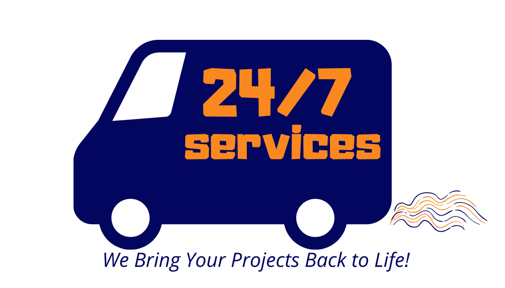

We Bring your Projects Back to Life
The Construction Doctors provide quailty home and business remodeling services. Our team has the experience and professionalism to ensure you are 100% SATISFIED in bringing your vision to life.
Contact us today to schedule or discuss your project!